Предназначение Counter settings
Counter settings предназначен для создания, изменения, экспорта и импорта счетчиков. Счетчик предназначен для сбора или генерации информации, которая может быть сохранена в базу данных и обработана. Например, счетчиком может быть система сбора информации о свободной памяти на сервере, система сбора информации о статусе дисков в RAID контроллере, система генерации событий при превышении счетчиком порогового значения, система поиска новых объектов в сети и так далее.
Возвращаемое значение: объект с данными счетчика:
{
initObjectsIDs: <array of object IDs>,
counter: {
name: <counter name>,
collectorID: <collector ID (directory name)>,
groupID: <counter group ID>,
unitID: <counter unit ID>,
keepHistory: <keep history in days>,
keepTrends: <keep trends in days>,
sourceMultiplier: <source multiplier (from counter unit)>,
counterID: <counter ID>,
description: <counter description or null>,
disabled: <enabled or disabled counter (1 or 0)>,
debug: <enabled or disabled counter debug (1 or 0)>,
taskCondition: <use counter as a task condition (1 or 0)>,
updateVariablesRef: <oldCounterName: update variables references when counter name is changed>
},
counterParameters: <object with parameters for collector>
{
<name1>: <value1>,
<name2>: <value2>,
...},
updateEvents: <array with update events objects>:
[{
counterID:,
objectID:,
expression:,
mode:,
objectFilter,
description:,
updateEventOrder:
}, ...],
variables: <object with variables objects>
{<variableName1>: {
variableOrder:,
description:,
expression:,
parentCounterName:,
objectID:,
objectVariable:,
function:,
functionParameters
}, ...},
}
COUNTER
Вкладка COUNTER позволяет настроить основные параметры счетчика, такие как имя, группу, используемый сборщик, параметры сборщика, параметры сохранения и хранения собранной информации в базу данных.
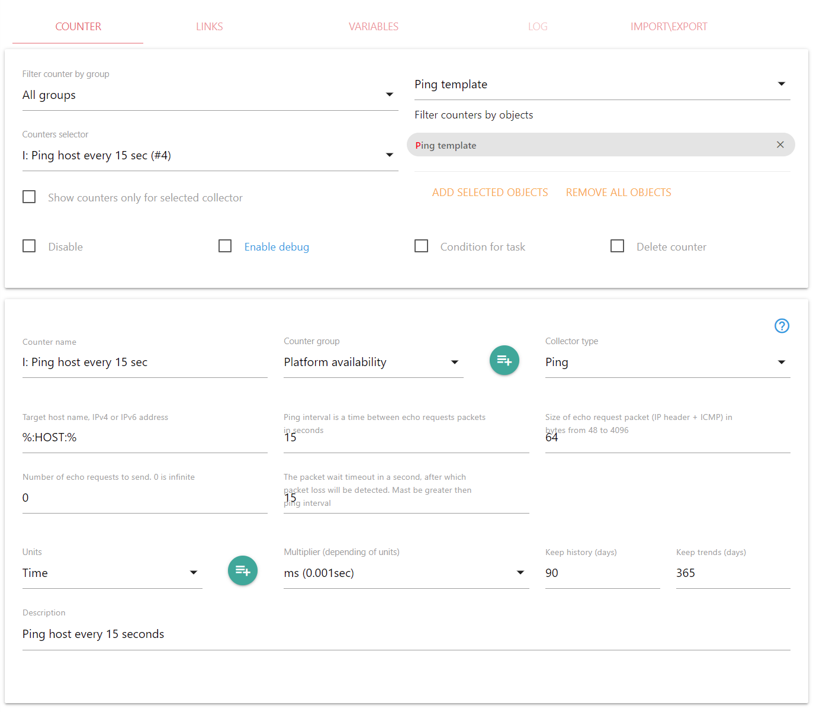Filter counter by group
Позволяет отфильтровать счетчики, выбрав определенную группу. Значение All groups, позволяет выбирать все счетчики для выбранного или выбранных объектов. Если объект не задан, то All groups позволяет выбирать вообще все счетчики.
Counters selector
Позволяет выбрать требуемый счетчик из списка. Если необходимо создать новый счетчик, выберите New counter. При необходимости скопировать часть настроек существующего счетчика в новый счетчик, нужно выбрать счетчик, с которого необходимо скопировать настройки, а потом выбрать New counter. Все настройки сохранятся в соответствующих полях
Show counters only for selected collector
Показывает только счетчики, использующие коллектор, выбранный в "Collector type"
Filter counters by objects
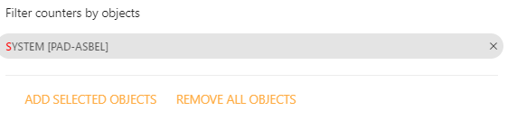Если в Filter counters by objects есть какой-то объект или объекты, в Counters selector будут показаны счетчики, подключенные к объектам из этого элемента. Если в системном меню Objects выбрать объекты, а затем запустить Counter settings, выбранные объекты появятся в поле Filter counters by objects. При необходимости можно добавить объекты в поле Filter counters by objects. Для этого нужно выбрать объекты в системном меню Objects и нажать на ADD SELECTED OBJECTS. Если нажать на крестик справа от объекта в поле Filter counters by objects, объект будет удален. Удалить все объекты из Filter counters by objects можно нажав на REMOVE ALL OBJECTS.
Disable
Если стоит этот признак, то сбор данных по выбранному счетчику производиться не будет.
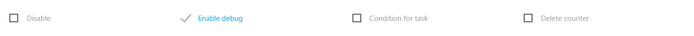Enable debug
Enable debug позволяет собирать отладочную информацию о вычислениях переменных по данному счетчику. Собранную информацию можно посмотреть в действии Variables. По отладочной информации можно определить, каким образом вычисляются переменные счетчика. Включение сбора отладочной информации может значительно увеличить нагрузку на систему, что приведет к задержкам в сборе информации. Сбор отладочной информации можно устанавливать не более чем на 10 счетчиков. Желательно отказаться от сбора отладочной информации в системе, обслуживающей реальную инфраструктуру. При нажатии на "Enable debug" открывается список счетчиков, в которых эта настройка включена. Если нажать на счетчик из списка, в новом окне браузера откроется действие Counter settings с выбранным счетчиком
Condition for task
Позволяет использовать счетчик в качестве условия для выполнения задачи. Для этого с помощью действия Task maker необходимо задать соответствующее условие для задачи. При выполнении условия, то есть когда счетчик будет запущен, задача выполнится.
Delete counter
Счетчик будет удален, все связи будут разрушены. Если переменные в других счетчиков зависят от удаляемого счетчика, их расчет не будет производится. Поэтому, в результате разрушения связей, возможна некорректная работа других счетчиков. При удалении счетчика появится окно с подтверждением действия.
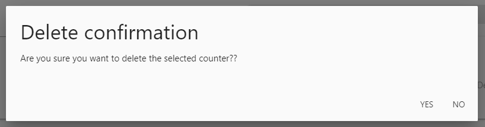Counter name
Поле служит для ввода нового или изменения текущего имени счетчика. Будьте внимательными при изменении имени счетчика. Переменные ссылаются на счетчики не по идентификатору, а по его имени. Это сделано для того, чтобы счетчик, подключенный к разным объектам, мог ссылаться на разные счетчики с одинаковыми именами. При смене имени счетчика необходимо поправить имена всех счетчиков на которые ссылаются переменные. При смене имени счетчика появится подсказка, где буду указаны все ссылки на имя счетчика.
Counter group
Поле для ввода или изменения группы у счетчика. Группировка служит для удобства поиска и фильтрации счетчиков.
Кнопка для редактирования групп счетчиков
С помощью кнопки playlist_add можно отредактировать название группы счетчиков, добавить новую группу, удалить группу, установить группу по умолчанию
- Add a new group (and enter the name of the new group below) - Добавить новую группу. Для этого нужно ввести имя новой группы в поле ввода New group name
- Edit the name of the selected group (and enter the new group name below) - Отредактировать выбранное имя группы. Для этого нужно ввести новое имя группы в поле ввода New group name
- Set selected group as start in group selector - установить выбранную группу как группу по умолчанию для Counter group. При создании нового счетчика будет выбираться эта группа.
- Delete selected group with all counters included in this group - Удалить выбранную группу и все счетчики, которые входят в эту группу. Все счетчики, входящие в эту группу, будут удалены.
Collector type
Позволяет выбрать сборщик, который будет собирать или генерировать данные для счетчика. Например, если вы хотите собирать данные по SNMP, необходимо выбрать сборщик SNMP. Если необходимо проверить сетевую доступность хоста, нужно выбрать сборщик Ping. Также можно разработать свой сборщик. После выбора сборщика необходимо установить его параметры.
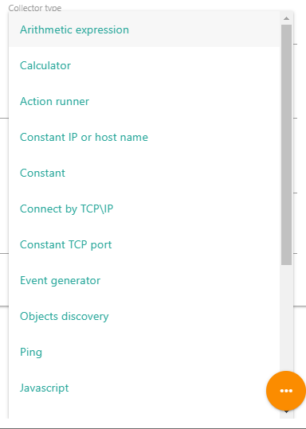Параметры сборщика
В зависимости от выбранного сборщика необходимо установить его параметры. Для каждого сборщика параметры будут разные. Например, для сборщика Ping параметрами могут быть имя или IP адрес удаленного хоста, интервал отправки пакетов, размер пакета, количество отправленных пакетов, временной интервал ожидания пакета, пока он не будет помечен как потерянный пакет. В качестве параметров сборщика или части параметра могут выступать переменные. Например, можно создать описание для события о том, что на сервере недостаточно оперативной памяти, включив в него переменные, значением которых является информация об объеме оставшейся памяти на сервере: "Free memory is %:HUMAN_FREE_MEMORY:%. Threshold %:HUMAN_FREE_MEMORY_LIMIT:%"
Для получения помощи по параметрам выбранного сборщика необходимо нажать на иконку с "?" в правом верхнем углу.
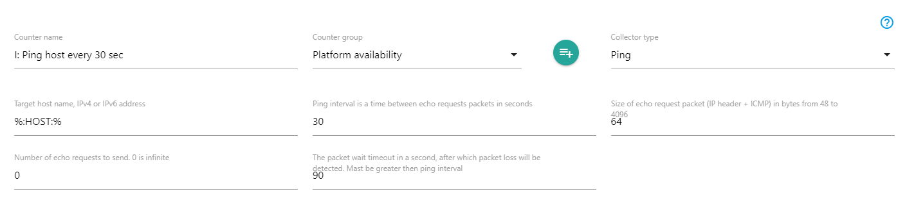Units
Единицы измерения для данных, полученных с помощью сборщиков. Для каждого счетчика можно установить единицу измерения, в которой будут получены данные. Например это могут быть Time, Bytes, Bits и другие. Корректность отображения данных зависит от выбранной единицы измерения для полученных данных.
Кнопка для редактирования единиц измерения
С помощью кнопки playlist_add можно отредактировать или добавить новую единицу измерения. При нажатии на кнопку появится диалог редактирования.
- Add a new unit (and enter the parameters of the new unit below) - Добавить новую единицу измерения. При добавлении новой единицы измерения необходимо ввести ее параметры
- Edit the name of the selected unit (and enter the unit parameters below) - Изменить единицу измерения. При изменении единицы измерения необходимо ввести ее параметры
- Delete selected unit with all counters in this unit - Удалить выбранную единицу измерения и все счетчики, которые ее используют. Все счетчики, которые используют эту единицу измерения, будут так же удалены.
- Параметры для новой или редактируемой единицы измерения:
- Abbreviation - аббревиатура единицы измерения, например % (проценты), B (байты), sec (секунды) и так далее
- Prefixes - Префиксы единицы измерения, которые будут добавляться перед аббревиатурой или будут использоваться самостоятельно. Префиксы необходим ввести через запятую. Например, для Bytes это могут быть K,M,G,T, что в сочетании с аббревиатурой "B" даст KB,MB,GB,TB
- Multipliers for each prefix - множители для каждого префикса. Количество множителей должно быть такое же, как и количество префиксов. Например, для единицы измерения Bytes и для префиксов K,M,G,T, множители могут быть 1024,1048576,1073741824,1099511627776. А для единицы измерения Time и для префиксов ns,μs,ms,min,hours,days,weeks,months,years множители могут быть 0.000000001,0.000001,0.001,60,3600,86400,604800,2592000,31536000
- Use a prefix without an abbreviation where no abbreviation is used (for example, for time) - если установлен этот признак, то при отображении единицы измерения, будет показан только префикс без аббревиатуры. Например, это актуально для единицы измерения - Time, где к базовой аббревиатуре sec добавлять самостоятельные префиксы ns,μs,ms,min,hours,days,weeks,months,years не нужно.
Multiplier (depending of units)
В зависимости от выбранной единицы измерения можно выбрать базовый множитель, для приведения данных к стандарту. Например, сборщик Ping возвращает данные о времени прохождения пакетов в миллисекундах. В этом случае необходимо выбрать ms в качестве базового множителя, для приведения данных к стандартному sec.
Keep history (days)
Сохранять исторические данные в течение указанного количества дней. Данные, собранные позже указанного количества дней, будут удаляться для сохранения дискового пространства. Вместе с данными будут удаляться те тренды, время усреднения для которых установлено менее одного часа. Если установлено 0, то данные не будут записаны в базу данных и будут удалятся из кэша при каждом сохранении кэша в БД.
Keep trends (days)
Сохранять тренды в течение указанного количества дней. Тренды, собранные позже указанного количества дней, будут удаляться для сохранения дискового пространства. Параметр влияет только на тренды с временем усреднения в один час или более. Если установлено 0, то тренды создаваться не будут.
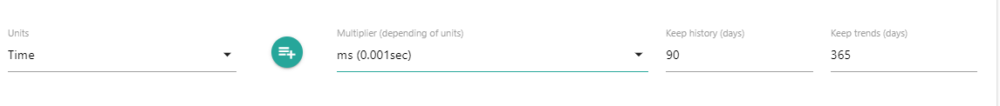Description
Пояснение к счетчику, переменным счетчика, событиям обновления и так далее. Служит для помощи в понимании назначения счетчика, его переменных и параметров.
LINKS
Вкладка LINKS позволяет настроить подключение счетчика к объектам, с которых необходимо собирать информацию. Кроме того, в этой вкладке настраиваются зависимости счетчика от родительских счетчиков, благодаря которым будет запускаться сбор или генерация информации.
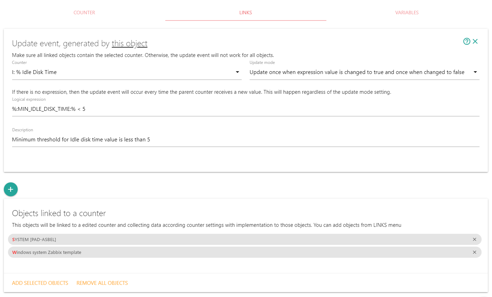Update event
Элемент служит для настройки событий, при наступлении которых будет происходить сбор данных по счетчику. Если для счетчика событие Update event не настроено, ALEPIZ запустит сбор данных для него во время запуска сервера или перезапуска. Если событие настроено, то при запуске сервера сбор данных осуществляться не будет.
Для счетчиков, которые собирают данные с помощью активных сборщиков, ничего настраивать н нужно. Эти сборщики самостоятельно собирают данные в зависимости от заложенных в них алгоритмов. Инициализация активных счетчиков происходит один раз при старте сервера. Например, сборщик Ping будет собирать данные с периодичностью, указанной в параметре Ping interval Запуск сборщика происходит один раз при старте сервера, далее сборщик собирает данные самостоятельно. Если для активных сборщиков установить событие, они будут инициализироваться каждый раз, когда наступает указанное событие и не будут запускаться при старте сервера.
Для пассивных счетчиков необходимо настроить событие, после которого будут собираться данные. Иначе сбор данных будет происходить один раз после запуска сервера. Событием может служить время активного счетчика Timer для периодического сбора данных раз в какое-то время. Либо это может быть предельное значение какого либо счетчика, после которого необходимо сгенерировать событие. Например, это может быть минимально допустимый объем свободного дискового пространства.
Может быть несколько событий, после которых будет происходить сбор данных по счетчику. Для создания нового события служит кнопка "+" под событиями или вверху страницы. Для удаления события служит "x" в правом верхнем углу элемента с параметрами события. Знак "?" в правом верхнем углу выводит подсказку по функциям, которые можно использовать для вычисления события. Для того, чтобы поменять порядок событий, необходимо передвинуть панель с событием на требуемое место.
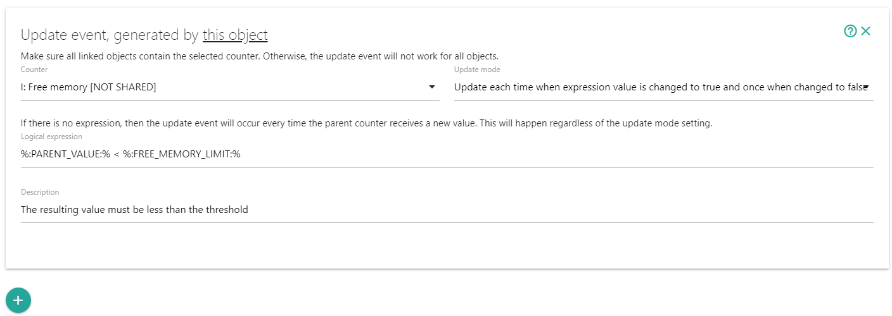Update event generated by...
Перед созданием нового события необходимо определиться с объектом, к которому привязан родительский счетчик и который будет его генерировать. Если в системном меню Object не выбран ни один объект, событие будет сгенерировано родительским счетчиком, привязанным к тому же объекту, к которому привязан данный счетчик. В заголовке события в этом случае будет надпись "Update event generated by this object". Если объект выбран, то событие будет сгенерировано родительским счетчиком, привязанным к выбранному объекту и в заголовке события будет указан выбранный объект.
Regular expression for filtering dependent objects....
Поле "Regular expression for filtering dependent objects by object names. You can use variables only from parent object. The variables will be replaced with values." появляется только если выбран конкретный объект, от событий которого зависит текущий счетчик. Оно может служить для фильтрации зависимых от события объектов по их имени. Если в поле указано регулярное выражение, то при вычислении зависимых от события объектов дополнительно будет применен фильтр по имени объекта: если имя зависимого объекта не соответствует регулярному выражению, сбор данных для этого объекта не будет производиться. При вычислении регулярного выражения будут использованы флаги "i" (игнорирование регистра при сопоставлении) и "g" (глобальное сопоставление). В регулярном выражении можно использовать только переменные, значения которых было вычислено в родительских объектах. Переменные, вычисляемые во вкладке VARIABLES или в свойствах зависимого объекта, не могут быть использованы для формирования регулярного выражения, т.к. их вычисление происходит после определения необходимости сбора данных по счетчику.
Counter
В данном поле выбирается счетчик объекта, от генерации значений которого будет зависеть текущий счетчик. Например, при потере нескольких пакетов счетчика со сборщиком Ping, может быть сгенерировано событие Packet loss, о котором придет уведомление администратору. Либо счетчик Timer генерирует событие каждые 30 секунд, после которого будет производиться сбор данных пассивными счетчиками, которые зависят от него. Если рядом с родительским счетчиком присутствует надпись [NOT SHARED], значит есть объекты, к которым привязан текущий счетчик и не привязан выбранный родительский счетчик. Для таких объектов событие генерироваться не будет.
Update mode
Данный элемент позволяет выбрать режим, в котором будет происходить генерация событий для вычисления значения зависимого счетчика. Изменять режим генерации событий имеет смысл только если есть логическое выражение, от которого зависит событие.
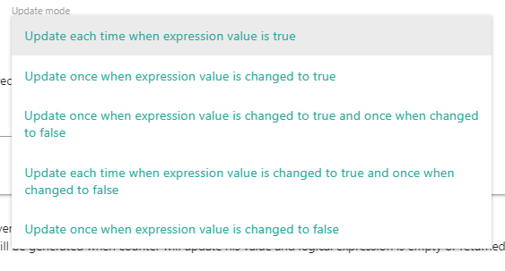- Update each time when expression value is true - генерировать событие каждый раз, когда логическое выражение возвращает значение true
- Update once when expression value is changed to true - генерировать событие один раз после того, как логическое выражение изменило значение с false на true
- Update once when expression value is changed to true and once when changed to false - генерировать событие один раз после того, как логическое выражение изменило значение с false на true и один раз после того, как логическое выражение изменило значение с true на false
- Update each time when expression value is changed to true and once when changed to false - генерировать событие каждый после того, как логическое выражение возвращает значение true и один раз после того, как логическое выражение изменило значение с true на false
- Update once when expression value is changed to false - генерировать событие один раз после того, как логическое выражение изменило значение с true на false
Logical expression
В зависимости от результата вычисления этого логического выражения и режима, установленного в Update, mode будет происходить генерация события для вычисление значения счетчика. Если логическое выражение отсутствует, то генерация события будет происходить каждый раз, когда родительский счетчик вернет какое-либо значение. Правила формирования этого логического выражения такие же, как и правила формирования логических выражений для вычисления переменных во вкладке VARIABLES.
Description
Можно написать пояснение к созданному Update event
Object linked to a counter
С помощью этого элемента можно подключить или отключить объекты от счетчика. При необходимости подключить к счетчику новые объекты, выберите объекты в системном меню Objects и нажмите на ADD SELECTED OBJECTS. Если нажать на крестик справа от объекта в Object linked to a counter, связь счетчика с объектом будет удалена. Отключить все объекты от счетчика можно нажав на REMOVE ALL OBJECTS. Все объекты отсортированы по алфавиту. При большом количестве подключенных объектов, снизу элемента появится навигация в виде номеров страниц.
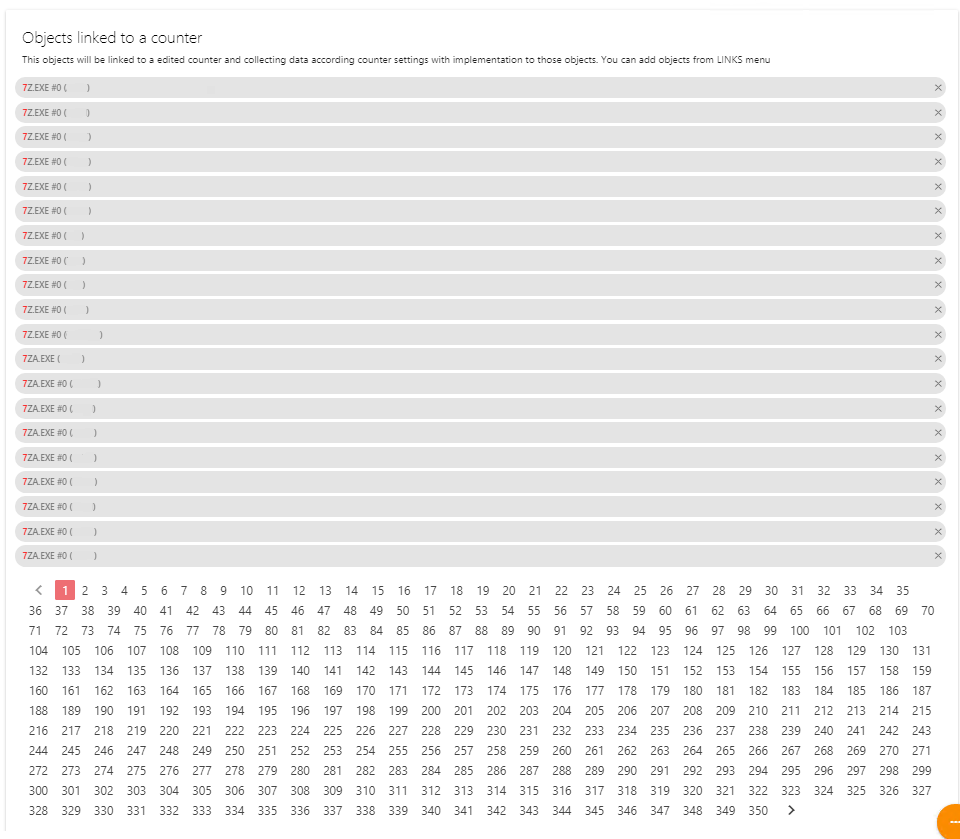VARIABLES
Переменные служат для:
- Создания логического выражения с помощью которого будет принято решение о необходимости вычисления значения зависимого счетчика
- Вычисления параметров сборщика. Например, можно установить переменную %:ZABBIX_HOSTNAME:% для сбора данных с Zabbix агента и при необходимости переопределять ее в свойствах каждого объекта через действие Object properties. Либо установить динамически изменяемую важность события в зависимости от того, сколько осталось оперативной памяти на сервере
- Динамического отображения данных о событии. То есть в сообщении о событии, как и в любой другой параметр сборщика, можно включить переменные, например "Idle disk time is %:MIN_IDLE_DISK_TIME:%%"
- Создания динамического текста, который будет произносится при наступлении события, например "На %:OBJECT_NAME:% время простоя дисковой подсистемы составляет %:MIN_IDLE_DISK_TIME:%%"
Переменные записываются как %:<ИМЯ_ПЕРЕМЕННОЙ>:% или %:?<ИМЯ_ПЕРЕМЕННОЙ>:%.
- Переменная, записанная в формате %:<ИМЯ_ПЕРЕМЕННОЙ>:% означает, что для вычисления значения счетчика необходимо вычислить значение переменной. Если значение такой переменной вычислить не удается, вычисление значения счетчика производиться не будет.
- Формат переменной %:?<ИМЯ_ПЕРЕМЕННОЙ>:% используется для того, чтобы вычисление значения счетчика не зависело от возможности вычисления переменной. Если значение переменной не может быть вычислено, ее значение будет равно 0 при вычислении выражения и null при использовании переменной в качестве параметра функции. Таким образом условие %:?VARIABLE:% == 0 будет принимать значение 1 если значение переменной равно нулю или оно неопределенно. Для проверки того, удалось или нет вычислить значение переменной необходимо использовать функцию isDefined(%:?<ИМЯ_ПЕРЕМЕННОЙ>:%)
Переменные можно определить во вкладке VARIABLES. Кроме того, все переменные, которые были определены в родительских счетчиках, будут доступны в текущем счетчике. Если переменную не удалось вычислить и ее префиксом не является %:?, данные по счетчику собираться не будут. Предопределенные переменные и переменные, которые определены в родительских счетчиках можно посмотреть, развернув форму "Predefined and inherited variables"
При формировании имен переменных, желательно придерживаться правила: имя переменной должно содержать информацию, к какому счетчику относится переменная (если в этом есть смысл) и для чего она предназначена. Например, %:FREE_MEMORY_THRESHOLD:% или %:FREE_MEMORY_NODATA:% или %:SNMP_PORT:%. Лучше не давать название переменной %:DONT_USE_ALERT_FOR_THIS_PROCESS:%, потому что если вы используете ее в свойстве объекта для переопределения переменной счетчика, становится непонятно, к какому счетчику относится переменная. Лучше назвать переменную %:SKIP_PROCESS_RESTART_ALERT:%
Обычно для имен переменных используется нотация SNAKE_CASE, но можно использовать любую другую удобную нотацию, например camelCase
Конверсии
Для удобства записи числовых значений переменных можно использовать предопределенные конверсии. Например, для указания минимального лимита памяти в 4Gb нет необходимости переводить это число в байты (4294967296) для сравнения с получаемым значением из счетчика. Можно использовать любые конверсии из таблицы ниже. Система автоматически осуществит перевод в случае с данными - в байты, а в случае с временем - в миллисекунды. Будьте внимательны с работой с временем: некоторые сборщики используют в качестве единицы времени не миллисекунды, а секунды. В этом случае необходимо делать преобразование значения конверсии в счетчике за счет деления значения на 1000.
| Название | Описание | Множитель |
|---|---|---|
| Kb | Килобайт | 1 024 |
| Mb | Мегабайт | 1 048 576 |
| Gb | Гигабайт | 1 073 741 824 |
| s | Секунды | 1 000 |
| m | Минуты | 60 000 |
| h | Часы | 3 600 000 |
| d | Дни | 86 400 000 |
| w | Недели | 604 800 000 |
Вкладка VARIABLES позволяет определить переменные двух типов:
- Переменные, значения которых вычисляется с использованием функций, работающих с историческими данными
- Выражения, значения которых вычисляются используя арифметические и логические операнды, а так же функции для обработки значений.
Для создания переменных основанных на исторических значениях, необходимо нажать на кнопку add_box. Кнопка library_add служит для создания вычисляемых переменных. Для удаления переменной необходимо нажать на кнопку "x" в правом верхнем углу элемента с переменной. Для получения справки по функциям и операндам необходимо нажать на кнопку "?" в правом верхнем углу элемента с переменной. Для изменения порядка переменных, необходимо их передвинуть на соответствующее место.
Некоторые переменные определены заранее:
- OBJECT_NAME - Имя объекта для которого вычисляется значение счетчика
- COUNTER_NAME - Имя текущего счетчика
- PARENT_OBJECT_NAME - Имя родительского объекта от которого зависит вычисление текущего счетчика, если установлена зависимость в Update events
- PARENT_COUNTER_NAME - Имя родительского счетчика от которого зависит вычисление текущего счетчика, если установлена зависимость в Update events
- PARENT_VALUE - Значение, которое вернул родительский счетчик, от которого зависит вычисление текущего счетчика, если установлена зависимость в Update events. Значение PARENT_VALUE может отличаться от значения, полученного функциями, работающими с историческими значениями, типа last(). Потому что исторические значения извлекаются из базы данных, а значение PARENT_VALUE сервер возвращает сразу после получения данных от родительского счетчика и базу оно могло еще не попасть.
- UPDATE_EVENT_STATE - Если у текущего счетчика есть родительский счетчик, который генерирует событие для вычисление текущего счетчика, то эта переменная принимает значение логического выражения из Update event: 0 или 1.
- UPDATE_EVENT_TIMESTAMP - Если у текущего счетчика есть родительский счетчик, который генерирует событие для вычисления текущего счетчика, то значением этой переменной будет время генерации такого события в миллисекундах с 01.01.1970
- ALEPIZ_ID - числовой идентификатор экземпляра ALEPIZ. -1, если экземпляр ALEPIZ не определен. Возвращается поле id из таблицы БД alepizNames, соответствующее значению параметра indexOfOwnNode файла config\node.json. Можно использовать для автоматизации в действиях Object creator, Object clone и Object editor при установке принадлежности объекта определенному экземпляру ALEPIZ
- ALEPIZ_NAME - название экземпляра ALEPIZ. Пустая строка, если экземпляр ALEPIZ или ALEPIZ_ID не определен. Возвращается поле name из таблицы БД alepizNames, id которого соответствует значению параметра indexOfOwnNode файла config\node.json. Обычно используется в информационных целях.
- PREV_ACTION_RESULT - Переменная используется только в задачах (Task maker), состоящих из нескольких действий. В этом случае значением переменной становится результат, возвращаемый предыдущим действием в задаче.
Создание переменных, вычисляемых на основе исторических значений.
Переменные, вычисляемые на основе исторических значений, используют функции, которые получают исторические данные из базы данных, обрабатывают их и возвращают значение. Например, это может быть функция last(), возвращающая последнее записанное значение счетчика в базу данных (если она вызывается без аргументов). Либо функция nodata(time), возвращающая true, если данных не было определенный интервал времени. Помощь по функциям можно получить, выбрав соответствующую функцию и нажав на значок "?" в правом верхнем углу формы ввода параметров переменной.
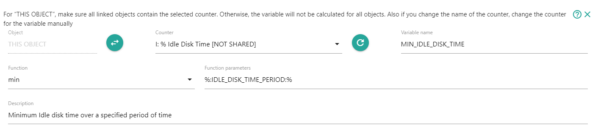Ниже приводится описание параметров переменных:
Object
Объект, у которого будут запрошены необходимые исторические данные. Кнопкой swap_horiz можно переключить тип объекта. Объекты могут быть следующих типов:
- THIS OBJECT - исторические данные будут получены со счетчика, привязанного к тому же объекту, к которому привязан текущий счетчик.
- <Имя объекта> - Исторические данные будут получены со счетчика какого-то конкретного объекта. Для того, чтобы выбрать объект, нужно в системном меню Objects выделить необходимый объект, затем переключить тип объекта в поле Object на требуемый объект
- Variable name - Имя объекта может задаваться переменной. Для этого в системном меню Objects необходимо выбрать один из объектов, к которому подключен требуемый счетчик. Это позволит в дальнейшем выбрать необходимый счетчик. Далее необходимо переключить тип объекта на Variable name. После этого в поле ввода необходимо указать название переменной. Название переменной может быть с или без знаков %: и :%.
Counter
Необходимо выбрать счетчик. Требуемые исторические данные будут запрашиваться у пары Объект-счетчик.
Если в качестве типа объекта выбрано Variable name, для выбора требуемого счетчика нужно в системном меню Objects выбрать объект, к которому подключен требуемый счетчик. После этого переключателем типа объектов еще раз выбрать тип объекта Variable name.
Надпись [NOT SHARED] у имени счетчика означает, что не все объекты, подключенные к текущему счетчику, так же имеют подключение к счетчику, из исторических значений которого планируется вычислить переменную. В результате этого переменная будет вычислена не для всех объектов, к которым подключен текущий счетчик.
Variable name
Имя новой переменной. Переменным желательно давать такие имена, чтобы по их названию можно было понять к какому счетчику они относятся и для чего они предназначены. Имена переменных чувствительны к регистру. Для имен переменных можно использовать любую удобную нотацию записи, например SNAKE_CASE или camelCase. Имя переменной создается автоматически на основе названия счетчика в SNAKE_CASE нотации. В дальнейшем имя переменной можно исправить. Любую переменную можно переопределить с помощью свойства объекта. Для этого необходимо с помощью действия Objects properties задать свойство объекту и дать ему имя переменной, которую необходимо переопределить.
Function
Необходимо выбрать функцию, с помощью которой будут получены и обработаны исторические данные. Для получения справки по функциям необходимо выбрать соответствующую функцию и нажать на значок "?" в правом верхнем углу формы ввода параметров переменной.
Function parameters
Поле ввода параметров для функции. В качестве разделителя параметров используется запятая. В качестве параметра так же можно указать переменную.
Description
Можно оставить описание переменной. Описание будет отображаться у зависимых объектов в форме Predefined and inherited variables.
Временные интервалы и количественные значения в параметрах функций.
В качестве параметров исторических функций могут использоваться как временные интервалы, так и количественные значения. Если требуется указать количество значений, перед числом необходимо поставить знак '#'. Если число будет без знака '#', то оно будет интерпретироваться как временной интервал. Например:
- nodata(5m) - нет данных по счетчику за последние 5 минут
- avg(#5) - арифметическое среднее за 5 последних сохраненных значений
- min(180000) - минимальное значение, полученное за последние 3 минуты
- min(#180000) - минимальное значение, полученное за последние 180000 значений
Префикс "!": повышение точности в работе с историческими значениями
При использовании временных интервалов и количественных значений в исторических функциях могут возникать неточности в вычислениях в случае, если в истории присутствует недостаточное количество данных. Для исключения неточностей можно использовать префикс "!" перед параметром функции, который отвечает за количество требуемых исторических данных или за временной интервал. Обычно это первый параметр. В этом случае, если ALEPIZ не может найти 90% от требуемого количества значений, возвращается результат undefined. Например, если для функции max(#!20) (или max(!#20)) в истории присутствует только 10 значений, то функция вычисляться не будет и вернется результат undefined. Если для функции min(!5m) в истории удалось найти данные только за 3 последние минуты, то функция так же не будет вычисляться и вернется результат undefined, даже если в истории есть значения за другой промежуток времени. Таким образом, например, функция min(!30m) в этом же примере может вернуть результат, потому что в истории присутствуют данные для интервала времени 30 минут. Если при запросе данных за временной интервал возвращается 0 или 1 значение, в любом случае будет возвращен результат undefined. Для определения факта присутствия необходимых данных в истории для временных интервалов, вычисляется средний интервал времени между собранными данными и если от конечной точки временного интервала до последней записи в истории значений интервал времени превышает средний интервал времени между данными + 20%, то считается, что требуемых данных в истории нет. Например, при запросе данных с текущего времени 10:25:00 за интервал времени 5 минут, вычисляем средний интервал между данными, полученными в течение 5 минут. Например он составляет 30 секунд. Далее смотрим, присутствуют ли данные в интервале от 10:20:00 до (10:20:00 + 30 секунд + 20% от 30 секунд), то есть ищем данные между 10:20:00 и 10:20:36. Если данные есть, вычисляем функцию, если нет, то возвращаем undefined
Примеры использования исторических функций:
| Переменная | Выражение | Описание |
|---|---|---|
| FREE_MEMORY_NODATA | Free memory:nodata(5m) | Возвратит true если по счетчику Free memory не было данных в течение 5 минут |
| SERVICE_START_TIME | Service start time:lastRob(#%:NUMBER_OF_SAMPLE_VALUES:%, #0, 0) | Время старта сервиса за исключением статистических выбросов за последние %:NUMBER_OF_SAMPLE_VALUES:% стартов. В счетчик Service start time записывается время каждого старта. Эта переменная позволяет вычислить старты сервиса по расписанию и исключить старты сервисов вручную в нестандартное время. Служит для определения расписания старта сервиса. |
| LAST_SERVICE_STATES | Service state:min(#4) | Минимальное значение счетчика Service state за последние 4 значения. Можно использовать для определения, был ли последнее время сервис запущен. Для запущенного сервиса это значение должно равняться 0 |
| SERVICE_STARTS_COUNT_AT_CURRENT_WEEK_DAY | Service start week day:count(#!%:NUMBER_OF_SAMPLE_VALUES_FOR_WEEK_DAYS:%, , %:CURRENT_WEEK_DAY:%, 0) | Сколько раз в текущий день недели сервис запускался. Данные берутся за последние %:NUMBER_OF_SAMPLE_VALUES_FOR_WEEK_DAYS:% дней. Служит для определения, является ли текущий день недели рабочим для сервиса |
Создание переменных, вычисляемых на основе выражений.
Переменные, вычисляемые на основе выражений служат для генерирования новых данных или преобразования полученных данных.
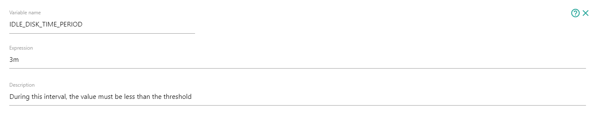Ниже приводится описание параметров переменных:
Variable name
Имя новой переменной. Переменным желательно давать такие имена, чтобы по их названию можно было понять к какому счетчику они относятся и для чего они предназначены. Имена переменных чувствительны к регистру. Для имен переменных можно использовать любую удобную нотацию записи, например SNAKE_CASE или camelCase. Любую переменную можно переопределить с помощью свойства объекта. Для этого необходимо с помощью действия Objects properties задать свойство объекту и дать ему имя переменной.
Expression
Выражение для вычисления значения переменной. В выражении можно использовать другие переменные, логические и арифметические операнды, а так же функции. Для получения справки по операндам и функциям необходимо нажать на значок "?" в правом верхнем углу формы ввода параметров переменной. Логические выражения возвращают значение 0 в случае false и 1 в случае true.
Description
Можно оставить описание переменной. Описание будет отображаться у зависимых объектов в форме Predefined and inherited variables.
Примеры выражений
| Переменная | Выражение | Описание |
|---|---|---|
| IDLE_DISK_TIME_PERIOD | 3m | С помощью конверсии переменной IDLE_DISK_TIME_PERIOD присваивается значение 3 минуты (180000) |
| FULL_HOSTNAME | getValueFromJSONStr(%:PARENT_VALUE:%, "hostname" ) | Функцией getValueFromJSONStr() разбирается структура JSON, записанная как строка в значении, полученным от родительского счетчика и из этой структуры получаем значение ключа 'hostname'. |
| SHORT_HOSTNAME | ifElse( %:FULL_HOSTNAME:%,
ifElse( testRE(%:FULL_HOSTNAME:%, "^.+\..+?[^0-9]$"),
toUpperCase( replaceRE(%:FULL_HOSTNAME:%, "^([^\.]+)\.?.+$", "$1") ),
toUpperCase( %:FULL_HOSTNAME:%)
),
%:IP_ADDRESS:% ) | В результате этого выражения в зависимости от значения переменной %:FULL_HOSTNAME:% получаем либо короткое имя хоста без домена в верхнем регистре, либо, если переменная %:FULL_HOSTNAME:% пустая, IP адрес из переменной %:IP_ADDRESS:% |
| HUMAN_FREE_MEMORY и HUMAN_FREE_MEMORY_LIMIT | toHuman(%:PARENT_VALUE:%, 'Bytes') и toHuman(%:FREE_MEMORY_LIMIT:%, 'Bytes') | Преобразуем полученное от родительского счетчика значение %:PARENT_VALUE:% и значение переменной %:FREE_MEMORY_LIMIT:% из байт в удобный человеку формат для последующего отображения в динамически сформированном описании события: "Free memory is %:HUMAN_FREE_MEMORY:%. Threshold %:HUMAN_FREE_MEMORY_LIMIT:%" |
LOG
Вкладка LOG служит для просмотра системных сообщений о работе выбранного счетчика. Чаще всего наличие сообщений означает некорректную работу и помогают найти ошибки в его настройке.
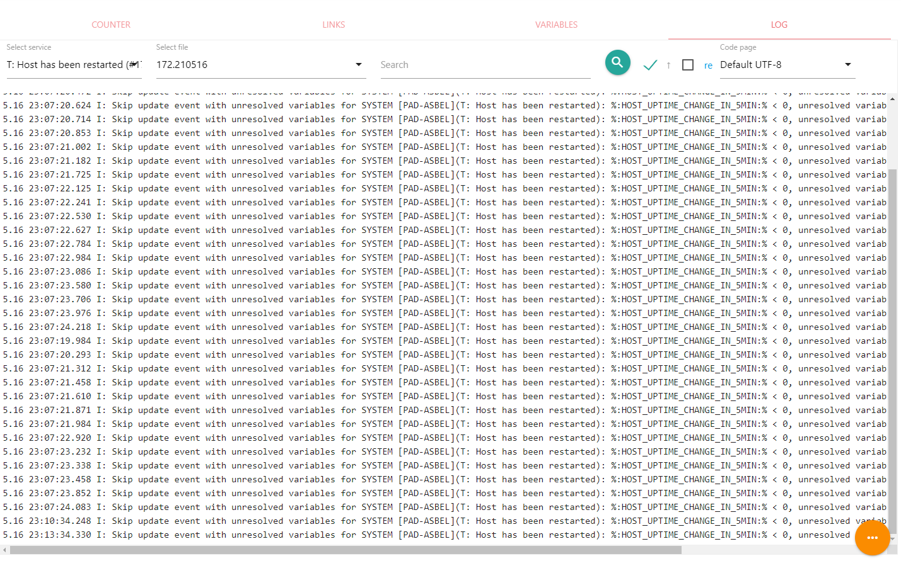Можно просматривать файлы с сообщениями за текущий или предыдущие дни (Select File), осуществлять поиск (Search) в прямом и обратном направлении (↑), использовать в поиске регулярные выражения (re) и менять кодировку текста (Code page). Если системные сообщения для счетчика отсутствуют, вкладка LOG будет неактивной. Лог файлы для счетчиков находятся в каталоге с остальными лог файлами ALEPIZ (обычно это каталог logs) в подкаталоге counters. В качестве имени для файла используется counterID. Количество дней за которые можно просматривать сообщения, регулируется системной настройкой глубины ротации логов.
IMPORT\EXPORT
Вкладка используется для импорта или экспорта настроек счетчика. С ее помощью можно передавать настройки между различными экземплярами ALEPIZ. Для передачи данных используется объект в формате JSON, который отображается в редакторе. Редактор служит для того, можно было вручную вносить изменения в экспортируемый или импортируемый объект с настройками счетчика.
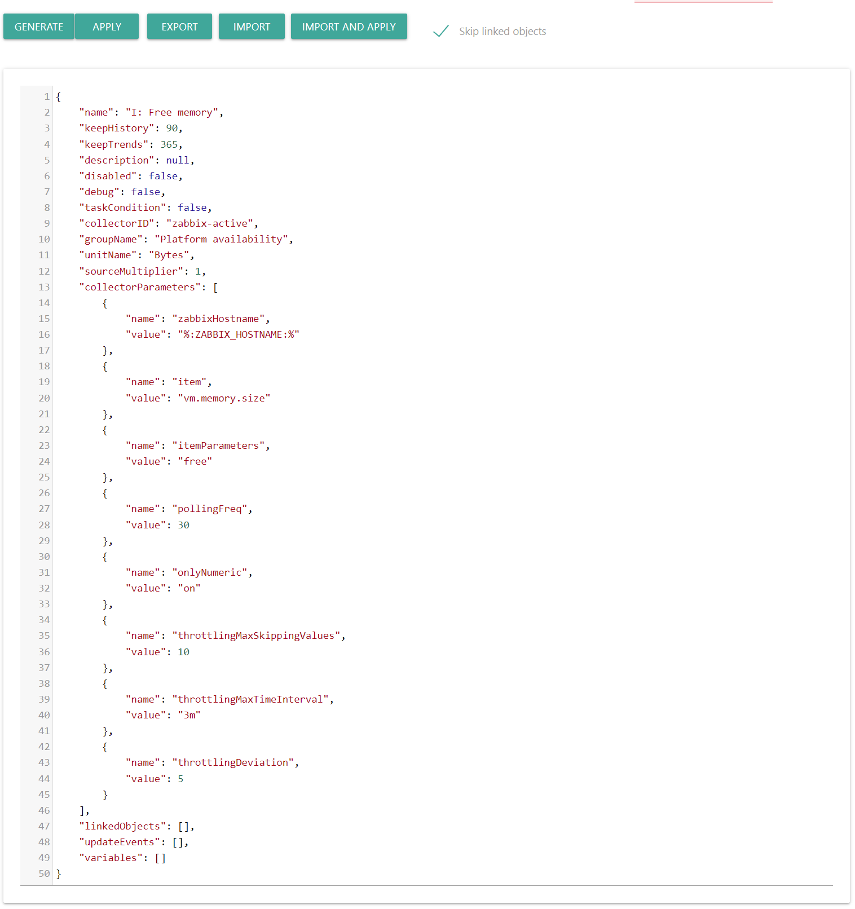Формат импортируемого и экспортируемого объекта
{
"name": <counter name>
"keepHistory": <number of days to store historical data>,
"keepTrends": <number of days to store averages of historical data (trends)>,
"description": <counter description>,
"disabled": <disable or enable counter (true|false)>,
"debug": <enable or disable counter debugging (true|false)>,
"taskCondition": <use a counter as a task execution condition (true|false)>,
"collectorID": <collector name (collector directory name)>,
"groupName": <counter group name>,
"unitName": <counter unit name>,
"sourceMultiplier": <multiplier for the value of the variable from the unit>,
"collectorParameters": [ <collector parameter arrays>
{
"name": <parameter name>,
"value": <parameter value>
},
...
],
"linkedObjects": [ <array of names for counter linked objects>
{
"name": <linked object name>
}
],
"updateEvents": [ <array of update events>
{
"counterName": <update event parent counter name>,
"name": <the name of the object for the update event, or null for the current object>,
"expression": <update event expression>,
"mode": <update event mode>:
1: Update once when expression value is changed to true and result is changed to true
2: Update once when expression value is changed to true and once when changed to false and result is changed to true or false
3: Update each time when expression value is true and once when changed to false and result is changed to true or false
4: Update once when expression value is changed to false and result is changed to false,
"description": <update event description>
"objectFilter": <object filter regExp>,
"updateEventOrder": <current update event order>
}
],
"variables": [ <array of historical or expression variables>
{ <historical variable>
"name": <variable name>,
"objectName": <the name of the object to receive data for the variable. null for
the current object or for an object name that is defined by a variable>,
"parentCounterName": <the name of the parent counter to get data for the variable>,
"function": <historical function name>,
"functionParameters": <comma separated historical function parameters>,
"objectVariable": variable to define the name of the object that is used to obtain historical data>,
"description": <variable description>,
"variableOrder": <current variable order>
},
{ <expression variable>
"name": <variable name>,
"expression": <expression to evaluate the value of a variable>,
"description": <variable description>,
"variableOrder": <current variable order>
}
]
}Описание интерфейса управления импортом и экспортом:
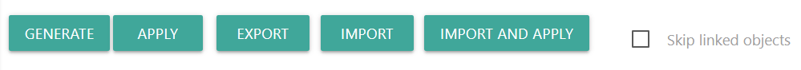EXPORT - сохранить данные из редактора экспорта и импорта в файл. Имя файла формируется автоматически из названия счетчика. Расширение файла будет .json
IMPORT - загрузить данные счетчика из файла в редактор импорта и экспорта данных. Производится поиск файлов с расширением .json. Для того, чтобы применить загруженные данные к счетчику в web интерфейс действия Counter settings, необходимо нажать на APPLY.
IMPORT AND APPLY - загрузить данные счетчика из файла в редактор импорта и экспорта данных и применить загруженные данные к счетчику. Данные будут загружены только в web интерфейс действия, без сохранения в базу данных. Для сохранения изменений счетчика необходимо запустить действие Counter settings на выполнение.
Skip linked objects - Не импортировать, не экспортировать и не применять информацию об объектах, подключенных к счетчику.